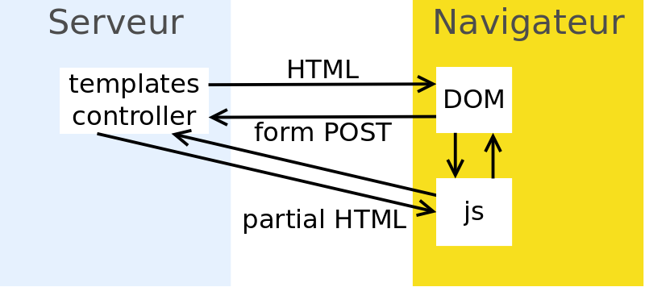
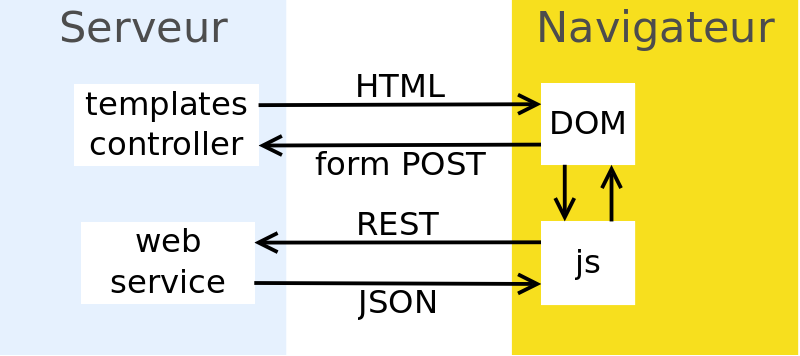
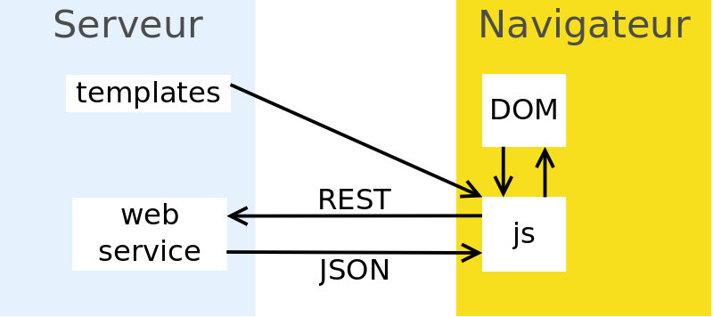
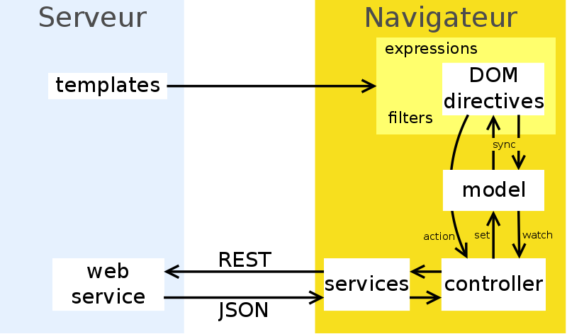

AngularJS
Pascal.Rigaux @ univ-paris1.fr
Partial updates

Exemple : grouper lite UI
Mixte

Exemple : esup-filemanager
Single Page Application

Exemple : esup-smsu
Single Page Application
- toute la navigation est faite en Ajax
- toutes les actions sont faites en Ajax :
➡ on s'abstrait des contraintes des <form> HTML
➡ les données client->serveur peuvent être complexes
- templates manipulés dans le navigateur ➡ cache
- routage avec URLs ...#/send
(NB : HTML5 permet de faire plus transparent avec pushState)
- les données de navigation sont conservées en mémoire dans le navigateur
- la session java ne stocke que le login ! re-log transparent
- debug facile dans le navigateur
⚠ programmation asynchrone !
AngularJS

Exemple : esup-smsu
AngularJS
fantastique framework javascript
- MVC
- liaison bidirectionnelle des données comme dans JSF
➡ pas de manipulation du DOM, sauf dans les directives
- injection de dépendances comme dans Spring
- documentation, exemples éditables (jsfiddle, plunk)
- sécurité (avec porte de sortie : Strict Contextual Escaping), routage, validateurs de formulaires, framework de tests
- intégration en cours dans les navigateurs (web components : object.observe, templates)
Hello world
<div ng-app>
<input type="text" ng-model="leNom">
<h1>Bonjour {{leNom}}!</h1>
</div>
Testez avec fiddle
Un filtre
Utilisation dans un template :
<h1>Bonjour {{leNom | capitalize}}!</h1>
La définition du filtre :
app.filter('capitalize', function() {
return function(s) {
return s ? s.charAt(0).toUpperCase() + s.slice(1) : '';
};
});
Testez avec fiddle
Un controlleur
app.controller('TodoController', function($scope) {
$scope.todos = [
{text:'apprendre angular', done:true},
{text:'faire une appli angular', done:false}];
$scope.addTodo = function() {
$scope.todos.push({text: $scope.todoText, done: false});
$scope.todoText = '';
};
});
Un controlleur (suite)
<div ng-app="todoApp">
<h2>Todo</h2>
<div ng-controller="TodoController">
<ul>
<li ng-repeat="todo in todos">
<input type="checkbox" ng-model="todo.done">
<span class="done-{{todo.done}}">{{todo.text}}</span>
</li>
</ul>
<form ng-submit="addTodo()">
<input type="text" ng-model="todoText">
<input type="submit" value="add">
</form>
</div>
</div>
Testez avec fiddle
AngularJS vs JSF
inconvénients d'AngularJS
- le code serveur doit être plus fiable, le spoofing des paramètres d'entrée étant facile
- validateurs souvent dupliqués côté client
- rôles vérifiés côté client et côté serveur
avantages d'AngularJS
- réactivité de l'interface
- facile, léger
- bonne intégration avec le javascript :)
- simple de faire des composants UI réutilisables (les "directives")
Inconvénients
- plus gourmand qu'une page web sans JS
- indexation difficile (pour les moteurs de recherche)
- nécessite navigateur récent
(IE8 non supporté par AngularJS 1.3)
- les « directives » sont difficiles à manipuler en dehors des cas documentés
- prévenir les clics doublés pendant l'attente
- danger du ng-model si pas de "."
Outils CSS & js
| Java | node.js |
|---|
| concaténation | yuicompressor | grunt-concat |
| minification | yuicompressor | grunt-usemin |
| vérification de code | jshint-maven-plugin (lent) | grunt-contrib-jshint |
| cache buster | jasig resource-server (wro4j namingStrategy?) | grunt-rev |
| download libs | webjars | bower |
| custom jquery | ? | grunt-jquery-builder |
| angular templates | ? | grunt-angular-templates |
NB : les webjars ne fournissent pas de liste ordonnée pour concaténation, par contre possibilité d'utiliser require.js
Conclusion
- applications réactives
- AngularJS très bien
Questions ?